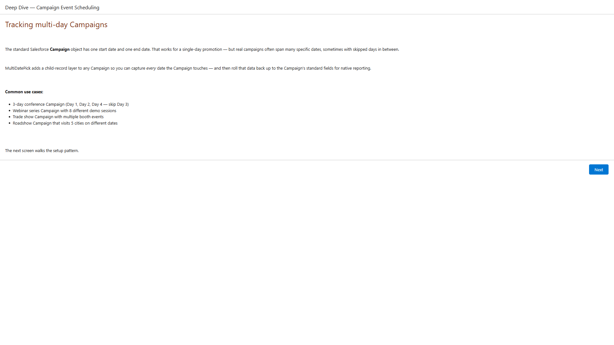
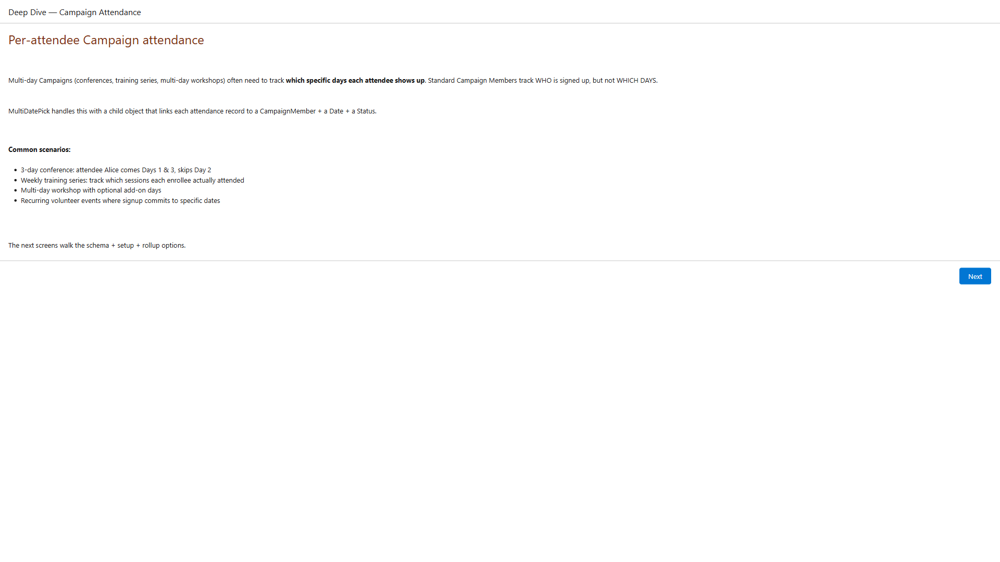

Multi-Day Salesforce Campaigns
The standard Salesforce Campaign object has one start date and one end date. Real campaigns rarely fit that shape. MultiDatePick adds a child-record layer to any Campaign — capture every date, track per-attendee attendance, and keep your standard Campaign reports honest.
The shape of a real Campaign
Standard Salesforce gives you one parent record with StartDate and EndDate. That works for a single-day promotion. It doesn't work for:
Day 1, Day 2, Day 4 (skip Day 3). One Campaign, three distinct attended days.
8 different demo sessions across the quarter, one Campaign per topic.
5 cities on 5 different dates, one Campaign per tour.
Multiple booth events, each on its own date, all attributable to the parent.
Tier 1 — Multi-Day Event Scheduling
Track every date a Campaign touches. Roll the MIN/MAX back up to Campaign.StartDate & EndDate so native Salesforce Campaign reports work without changes.
The 3-step setup
- Create a child object — e.g.
Campaign_Session__cwith aSession_Date__cdate field and aCampaign__clookup back to the standard Campaign. Optional:Status__cpicklist,End_Date__cfor date ranges. - Run the MultiDatePick Setup Wizard — point it at your child object. The wizard auto-detects the Campaign lookup and surfaces an orange banner confirming Campaign integration.
- Drop the component on the Campaign record page via App Builder. Admins pick dates → child Session records are created automatically, linked to the parent Campaign.
Optional: rollup to Campaign.StartDate / EndDate
Reports filtering by Campaign date range need the standard fields to reflect MIN/MAX of the child dates. Two approaches:
- Record-Triggered Flow — no code. Get sibling records, compute MIN/MAX, update parent. Best for low-volume orgs.
- Apex Trigger — bulk-safe, faster, recommended for high-volume orgs. Copy the sample
MultiDatePickCampaignRollupSample.clsfrom the package'stest-onlydirectory and adjust to your schema.

The bundled Deep Dive — Campaign Event Scheduling flow walks admins through the full setup pattern with live LWC embeds.
Per-Attendee Attendance
Standard CampaignMembers tell you who is signed up. They don't tell you which days each person actually showed up. For multi-day events, that's the question that matters.

The Deep Dive — Campaign Attendance flow walks the schema, status-flip semantics, and 4-mode rollup options.
Schema
Use the bundled MDP_Campaign_Attendance__c object that ships with the package, or create your own with the same shape:
Campaign__c— Lookup to Campaign (required)Contact__c— Lookup to the attendee Contact (optional — leave blank for headcount-only tracking)Attendance_Date__c— Date (required; one record per attendee per day)Attendance_Status__c— Picklist: Attending / Tentative / Declined / No Response
Status flip preserves history
When an attendee deselects a day they previously committed to, MultiDatePick flips the status to Declined instead of deleting the record. You can answer "who originally signed up for Day 2 but declined?" — standard CampaignMember.Status uses the same audit-friendly pattern.
Optional: 4 rollup modes
The sample MultiDatePickAttendanceRollupSample.cls supports:
- None — use standard
NumberOfResponses - TotalDays — total attendance-day count (5 attendees × 3 days = 15)
- PeakDay — max attendees on any single day (capacity planning)
- Both — populate both metrics
CampaignMember Write-Back v1.1
Make the standard Salesforce reports work. When an attendance record flips to Attending, the bundled trigger updates CampaignMember.Status so HasResponded, FirstRespondedDate, and "Members Responded" reports reflect attendance reality.
Why this matters
Without the write-back, MultiDatePick is a parallel data set: rich per-day attendance lives in your child object, but standard Salesforce Campaign dashboards see nothing. With the write-back, every attendance Attending update fires through to the standard CampaignMember.Status — Salesforce auto-derives HasResponded=true and stamps FirstRespondedDate. Standard reports just start working.
How to enable
- Open your MDP_Config__mdt record (Setup → Custom Metadata Types → MDP Configs)
- Check Enable CampaignMember Write-Back
- Set Attendee Lookup Field to your Contact-lookup field name (default
Contact__c)
Optional tuning
- Write-Back Attendance Statuses — CSV of attendance values that trigger write-back. Default:
Attending. - CampaignMember Attending Status — the
CampaignMember.Statusvalue to set. Leave blank to auto-detect the Campaign's default Responded status. - Auto-Create CampaignMembers — when ON, attendance records whose Contact isn't already a CampaignMember trigger creation. When OFF, write-back silently skips those Contacts.
CampaignMember.Status. Write-back fails gracefully when permissions are missing — it logs a warning and silently skips, never blocking the underlying attendance save.
Discoverable from Day One
The Setup Wizard auto-detects Campaign relationships and surfaces a banner with one-click access to the Deep Dive walkthroughs. The bundled Intro flow lets new admins try the Campaign patterns before committing.
Setup Wizard banner
When the wizard's relationshipField matches Campaign__c, CampaignId, or similar, a Campaign-aware orange banner appears with a link to the Deep Dive flow. No reading docs required — admins see the path the moment they configure it.
Attendance heuristic banner
If the wizard's relatedObject contains "attendance" (e.g. MDP_Campaign_Attendance__c, Class_Attendance__c, Session_RSVP__c), a second banner surfaces the per-attendee attendance pattern + write-back config.
Two Deep Dive flows
Deep Dive — Campaign Event Scheduling covers Tier 1 (multi-day sessions). Deep Dive — Campaign Attendance covers Tier 3 (per-attendee + write-back). Both ship in the package; admins launch from the App Launcher.
Intro flow integration
The bundled Intro to MultiDatePick flow now includes 2 Campaign cards in its path picker so new admins can preview the Campaign use cases alongside the data-shape choices — not buried in docs.
Why dual Campaign + Contact lookups, not CampaignMember?
Salesforce platform doesn't allow custom-object Lookup fields to target the CampaignMember standard junction object — we hit that wall during v1.0 design. The bundled attendance object uses dual Campaign__c + Contact__c lookups instead, which gives the same expressive power and is fully platform-supported.
For Lead-attendee tracking, add a Lead__c lookup field to your attendance object (Salesforce doesn't support polymorphic Lead-or-Contact lookups natively on custom objects).
The v1.1 write-back layer interacts with CampaignMember via Apex SOQL + DML — the platform restriction is narrow (no Lookup target), not broad (no interaction).
Ready to track every Campaign date?
Install MultiDatePick, drop the wrapper on your Campaign record page, and watch standard Salesforce reports start reflecting reality.